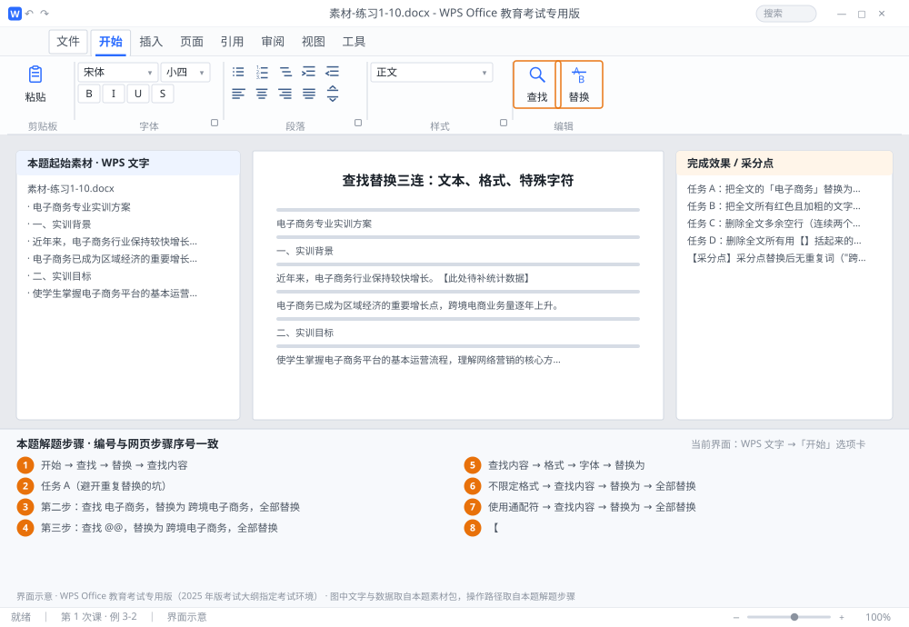

完成比对文档 · 例 3-2
查找替换三连：文本、格式、特殊字符 ｜ 第 1 次课 / WPS 文字 ｜ 网页：入门实操课.html ｜ 考试环境：WPS Office 教育考试专用版（2025 年版考试大纲指定考试环境）
用途 本页按修订后的题目要求与解题步骤生成，是交卷自查的结果基准：
逐项列出每一步应出现的可复核结果，配合模拟操作截图与解题结果文件使用。
它不是素材包的一部分，不会预置答案动作；起始素材仍从本题素材包下载。
一、本题起始素材包
目录：练习素材/练习1-10-查找替换三连/ ｜
下载包：练习素材/下载/练习1-10-查找替换三连.zip
二、题目要求
- 任务 A：把全文的「电子商务」替换为「跨境电子商务」，要求不出现「跨境跨境电子商务」。
- 任务 B：把全文所有红色且加粗的文字，统一改为蓝色（标准蓝）、不加粗。
- 任务 C：删除全文多余空行（连续两个段落标记变成一个）。
- 任务 D：删除全文所有用【】括起来的批注（如【此处待补数据】）。
- 完成后保存为 学号-姓名-练习3-2.docx。
三、解题步骤（编号与下方核对表、截图编号一致）
- 打开替换对话框。按 Ctrl+H（或在「开始」→「查找」下拉 →「替换」）。对话框含「查找内容」「替换为」两栏，点「更多」可展开格式与通配符选项。
- 任务 A（避开重复替换的坑）。直接替换会出错：原文中本来就写着"跨境电子商务"的地方，会被替换成"跨境跨境电子商务"。可靠做法是占位符两遍替换： 第一步：查找 跨境电子商务，替换为 @@，全部替换（先把已经正确的词"藏起来"）；
- 第二步：查找 电子商务，替换为 跨境电子商务，全部替换；
- 第三步：查找 @@，替换为 跨境电子商务，全部替换。
- 任务 B（格式替换）。清空两个输入框 → 光标放在「查找内容」框 → 点「格式」→「字体」→ 设红色、加粗 → 确定；光标移到「替换为」框 → 点「格式」→「字体」→ 设蓝色、取消加粗 → 确定；点「全部替换」。（两个框下方会显示已设的格式说明，务必核对再替换。）
- 任务 C（删空行）。先点「不限定格式」清掉刚才的格式条件 → 「查找内容」输入 ^p^p、「替换为」输入 ^p → 「全部替换」，反复点直到提示"替换 0 处"（一次只能消掉一半空行）。
- 任务 D（通配符删批注）。勾选「使用通配符」→「查找内容」输入 【*】、「替换为」留空 →「全部替换」。（* 代表任意多个字符，但不会跨段落，所以只会匹配段内的【…】。）
- 验收。用 Ctrl+F 搜「【」应显示 0 个结果；再目视检查空行是否只剩一个。完成后 Ctrl+S 另存为 学号-姓名-练习3-2.docx。
四、完成效果 / 采分点
采分点替换后无重复词（"跨境跨境"） · 格式替换两端条件都设对 · 空行彻底清除（无残留 ¶¶） · 【】批注全删且原文正文未误删
五、逐项完成核对表
| 步骤 | 关键操作路径 | 应出现的结果（可复核） |
|---|
| 1 | 打开替换对话框 | 「开始」、「查找」、「替换」、「查找内容」、「替换为」 |
| 2 | 任务 A（避开重复替换的坑） | 任务 A（避开重复替换的坑） |
| 3 | 第二步：查找 电子商务，替换为 跨境电子商务，全部替换 | 第二步：查找 电子商务，替换为 跨境电子商务，全部替换 |
| 4 | 第三步：查找 @@，替换为 跨境电子商务，全部替换 | 第三步：查找 @@，替换为 跨境电子商务，全部替换 |
| 5 | 任务 B（格式替换） | 「查找内容」、「格式」、「字体」、「替换为」、「全部替换」 |
| 6 | 任务 C（删空行） | 「不限定格式」、「查找内容」、「替换为」、「全部替换」 |
| 7 | 任务 D（通配符删批注） | 「使用通配符」、「查找内容」、「替换为」、「全部替换」 |
| 8 | 验收 | 「【」、学号-姓名-练习3-2.docx |
六、模拟操作截图

界面示意 · WPS Office 教育考试专用版 · 橙色编号与本题解题步骤序号一致；
图中文字与数据取自本题素材包，功能入口取自本题解题步骤。
核对方法：按网页解题步骤完成并另存自己的成稿后，逐行比对本表第 3 列的
参数、公式、区域、文件名与对象数量；再对照网页「完成效果 / 采分点」检查版式是否一致。